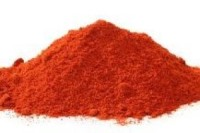
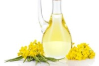

Cuida la tierra
La carne aporta entre el 15 y el 20% de proteínas de buena calidad donde se incluyen todos los aminoácidos esenciales, además de ser la principal fuente de hierro y la vitamina B12. Nos proporciona entre un 10 y un 20% de grasas (gran parte de esta grasa saturada) y consta de pocos carbohidratos. A mayores, nos aporta vitaminas del grupo B, zinc y fósforo.
-

Quinoa
Proteínas, omega-3, calcio, hierro, magnesio y vitaminas C, E, B1 y B2
-
Tempeh
Proteínas, calcio, magnesio, potasio
-
Amaranto
Proteínas, vitaminas A, B, C, B1, B2, B3, calcio, hierro y fósforo
-
Seitan
Alta cantidad de proteínas y textura similar a la carne
-

Trigo sarraceno
Proteínas, omega-3, omega-6, vitaminas del grupo B, hierro y magnesio
-

Semillas de cáñamo
Proteínas, vitamina E, B1, B2, fósforo, potasio, magnesio, calcio y hierro
-

Semillas de soja
Proteínas, calcio, hierro, fósforo y potasio
-

Espirulina
Proteínas, calcio, potasio, magnesio, vitamina E y del grupo B
-
Soja texturizada
Proteína, fibra, potasio, fóforo, calcio y vitamina B1 y B2
-

Paprika
Vitamina A, B2, B1, hierro, potasio y fósforo
-
Pimienta rojo
Vitamina A y C
-

Pimienta de cayenna
Vitamina A
-

Polvo de chile
Vitamina A, B2, B3, B6, E, K, hierro y magnesio
-

Batata
Vitamina A
-

Zanahorias
Vitamina A
-

Verduras de hoja verde
Vitamina A, vitamina D y magnesio
-

Tahini
Vitamina B, A, C y zinc, calcio, hierro, magnesio y potasio
-

Maní o mantequilla de cacahuete
Vitamina B y zinc, potasio, magnesio, calcio y hierro
-

Semillas de sésamo
Fuente de vitamina D y zinc
-

Semillas de lino
Omega-3 y vitamina D
-

Tofu
Vitamina D, hierro y fósforo
-
Nueces
Vitamina D, omega-3, calcio, fósforo y potasio
-

Arándonos
Yodo y potasio
-

Alubias
Yodo, magnesio, potasio y calcio
-
Fresas
Yodo y vitamina C
-
Sandía
Magnesio
-
Semillas de chía
Omega-3, hierro, fósforo, calcio, vitamina A y B1
-

Aceite de cánola
Omega-3, omega-6, rico en ácidos grasos, vitaminas E y K
-
Aceite de soja
Omega-3
-

Avena
Omega-3, vitaminas del grupo B, potasio, magnesio y calcio
0 de 0